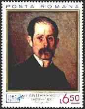
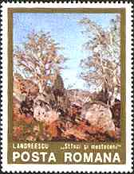
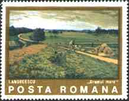
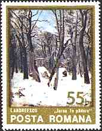

Ion Andreescu
|
The
painter Ion Andreescu was was born in the year 1850 in Bucharest and died only 32 years
later in the same city. Like the painter
Nicolae Grigorescu, Andreescu passed also through Barbizon.
(For more information about the works of art displayed please point to the stamps with the mouse index.) |
 |

Not only was Andreescu a precocious talent, he had an unusual artistic sensitivity. Happily, his inspiration followed Grigorescu's open air painting which was, at that time, the most accomplished expression of contemporary Romanian painting. All these elements contributed to shape Andreescu's style, the evolution of which gained from the artist's chance to further his studies in Paris.
 |
This was complemented by Andreescu's contact with the works by Barbizon school and furthermore, with those of the Impressionists. He left after him wonderful landscapes and portraits. Some of them can be admired on this page.
 |
 |
 |
 |
Background: Ion Andreescu, Trees in Blossom, 1880?, The National Art Museum of Romania, Bucharest.
| Revised: 08/13/01. Copyright © 1999 - 2001 by Victor Manta, Switzerland. All rights reserved in all countries. |